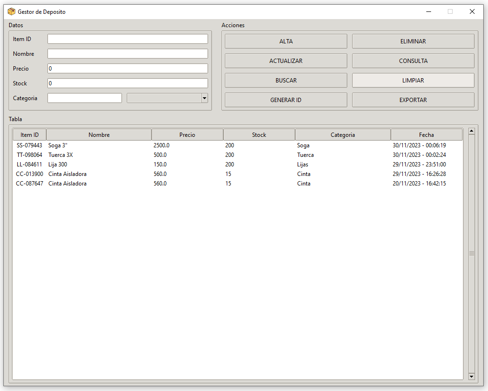

Guía de la Aplicacion
La aplicación de control de inventario es una herramienta fácil de usar diseñada para ayudarte a gestionar el inventario de un depósito. Aquí te explico cómo usarla:
1. Inicio: Al abrir la aplicación, verás una interfaz de usuario con varios campos y botones. Cada campo corresponde a un atributo del item del inventario (ID del item, nombre, precio, stock, categoría).
2. Agregar un Item (Alta): Para agregar un nuevo item al inventario, completa los campos con la información del item y haz clic en el botón “Alta”. La aplicación agregará el item a la base de datos.
3. Eliminar un Item (Eliminar): Si necesitas eliminar un item del inventario, simplemente selecciona un item de la talba y haz clic en el botón “Baja”. El item será eliminado de la base de datos.
4. Ver Items (Consulta): Si quieres consultar por los detalles de un item en particular, seleccione el item de la tabla y haz clock en el boton “Consulta”, esto carga los datos del elemento seleccionado en los campos correspondiente.
5. Modificar un Item (Actualizar): Luego de generar una consulta, puede modificar algun campo del item seleccionado, simplemente efectue el cambio en el campo deseado y luego de click en el boton “Actualizar”.
6. Buscar un Item: Para buscar un item específico, introduzca algun valor en el campo que desee realiar la busqueda y haz clic en el botón “Buscar”. La aplicación mostrará en la tabla los elementos que coincidan con lo ingresado. Se puede utilizar varios campos para afinar la busqueda.
7. Limpiar Campos: Si necesitas borrar todos los campos de entrada, haz clic en el botón “Limpiar”. Todos los campos se vaciarán.
8. Generar un ID de Item: Si necesitas un nuevo ID de item, ingrese el resto de datos del item y haz clic en el botón “Generar ID de Item”. La aplicación generará un ID único que puedes usar para un nuevo item.
9. Exportar Tabla: Si quieres guardar los datos del inventario en un archivo externo del tipo .xlsx, haz clic en el botón “Exportar Tabla”. La aplicación exportara los datos teniendo en cuenta el siguiente orden:
Documentos
Escritorio
Ubicaicon del programa
En caso de que alguno falle el programa intentara en el siguiente en la lista.